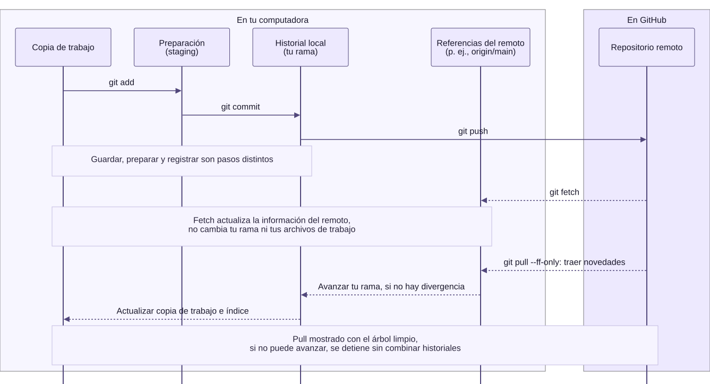

00.03 — Git: historial y actualización del perfil
MÓDULO 00 / 00.03
Contenido / Entorno de aprendizaje
Inicio / Módulo 00 / Lección 00.03
| Tu sesión | Qué prepararás o comprobarás |
|---|---|
| Meta | Conservar una actualización y distinguir archivo guardado, commit y publicación |
| Necesitas | Git; cuenta de GitHub y repositorio del perfil solo para publicar |
| Evidencia | Diff revisado, commit local y nota; comprobación remota si publicas |
Preparación · Material de apoyo · Glosario · Ir al lab · Comprobar
Propósito
Conservar una actualización del README comprendiendo cada paso y publicarla si eliges el recorrido con GitHub. Esta base servirá después para guardar tus scripts, consultas y documentación junto con una explicación de sus cambios.
Antes de empezar
Completa Markdown y perfil y terminal y rutas. Necesitas Git instalado; no necesitas Python, pip ni uv. Primero ejecuta git --version en tu terminal. Si no se reconoce el comando, utiliza con quien te acompaña la guía oficial de instalación de Git para tu sistema. En Windows, la distribución habitual es Git for Windows; en macOS y Linux la guía explica sus opciones. Tras instalar, abre una terminal nueva y repite la comprobación. No instales otra copia si el comando ya funciona.
Elige un recorrido después de leer el apartado 1:
| Recorrido | Qué necesitas | Por dónde continuar |
|---|---|---|
| Actualizar tu perfil y publicarlo | Git, cuenta de GitHub y README del perfil creado en 00.01 | Apartados 2–7 |
| Practicar Git solo en tu equipo | Git y una carpeta nueva de práctica; no requiere cuenta ni conexión para los comandos locales | Alternativa local sin GitHub |
Haber descargado DS Track como ZIP no impide usar Git en otro proyecto. El ZIP trae los archivos, pero no el historial Git del repositorio. En esta lección trabaja fuera de DS Track: clona tu perfil o crea la carpeta de práctica. Si todavía no puedes preparar Git, lee los ejemplos y registra la ejecución como pendiente; leerlos no equivale a haber creado un commit.
Qué vas a aprender
- Distinguir guardar un archivo, preparar cambios, hacer commit y publicar.
- Preparar una copia de trabajo: clonar el perfil o iniciar un repositorio local nuevo.
- Revisar los cambios y registrar una modificación; si publicas, comprobar el resultado en GitHub.
- Retomar una sesión reconociendo el estado del repositorio.
Material de apoyo
| Recurso | Para qué sirve | Uso |
|---|---|---|
| Plantilla del perfil | Consultar la presentación que adaptaste en 00.01 | Consulta opcional |
| Lección de Markdown | Retomar cómo editar y previsualizar el README | Apoyo previo |
| Diagrama de las áreas de Git | Seguir los comandos entre áreas locales y remoto | Consulta visual; disponible también a tamaño completo |

Abre cada recurso cuando aparezca en el recorrido. Conserva los originales y trabaja las modificaciones en tu copia personal.
1. Entender el recorrido de un cambio
Qué problema resuelve Git
Imagina que guardas reporte_final, reporte_final2 y reporte_ahora_si. ¿Cuál contiene la corrección? ¿Qué cambió respecto al anterior? Git permite mantener los archivos de trabajo y registrar versiones en un historial, con autor, fecha y mensaje. El mensaje debe explicar la intención: Git no sabe por sí solo por qué tomaste una decisión ni si el resultado es correcto.
Git conserva el historial de los archivos que registras. Si modificas una explicación o corriges un script, puedes consultar qué cambió y por qué. El repositorio local está en tu computadora; el remoto está alojado en GitHub.
El recorrido general es editar y guardar → preparar → registrar en el historial → publicar, si tienes un remoto. Cada paso tiene una comprobación distinta:
| Momento | Qué ocurre | Cómo lo compruebas |
|---|---|---|
| Archivo guardado | Tu editor escribe la modificación en el archivo local | git diff muestra cambios sin preparar en archivos ya registrados |
| Cambio preparado | Seleccionas lo que incluirá el próximo commit | git diff --staged muestra esa selección |
| Commit creado | Git registra los cambios preparados en el historial local | git log --oneline -1 muestra el último commit |
| Publicación completada | Los commits se envían al remoto | Compruebas el archivo y el historial en GitHub |
El área de preparación es la selección de cambios para el próximo commit. No es una publicación. Un commit tiene un identificador y un mensaje; el mensaje explica la intención, por ejemplo «Agrega mis objetivos de aprendizaje».
Las áreas por las que pasa un cambio

Abrir el diagrama a tamaño completo · Fuente editable en Mermaid
Lectura del diagrama: editas en tu copia de trabajo; add prepara la versión que quieres registrar y commit la incorpora al historial local. Si eliges publicar, push envía los commits al remoto. En la práctica sin GitHub llegas hasta el historial local. El área de preparación no es una carpeta donde debas mover manualmente el README: Git mantiene esa selección.
Las flechas representan acciones, no el traslado del archivo: tu README sigue en la copia de trabajo después del commit. Si vuelves a editarlo, esa nueva edición no cambia lo que ya preparaste ni los commits anteriores.
La cuarta columna también está en tu computadora: contiene referencias como origin/main, que recuerdan el estado conocido de una rama del remoto. No es otro repositorio remoto ni una consulta en vivo a GitHub. origin es el nombre habitual del remoto y main es un ejemplo de nombre de rama; el tuyo puede ser distinto.
La parte inferior es una anticipación para cuando retomes el trabajo: fetch trae novedades y actualiza esas referencias sin modificar tu rama ni tus archivos de trabajo. En cambio, pull --ff-only trae las novedades y trata de avanzar tu rama; si puede, actualiza también la copia de trabajo y el índice (el área de preparación). Si los historiales divergen, se detiene sin combinarlos. En esta práctica se usa con el árbol limpio, como explica el apartado 7; no necesitas ejecutar fetch por separado antes de pull.
git diffcompara la copia de trabajo con el área de preparación: muestra cambios sin preparar en archivos seguidos.git diff --stagedcompara el área de preparación con el último commit: muestra lo que registrarías en el siguiente. Antes del primer commit, muestra el contenido nuevo preparado.
Ambas comparaciones son locales: no comprueban por sí solas qué se publicó en GitHub. Un archivo nuevo no seguido aparece en git status, pero su contenido aún no aparece en git diff.
Para conversar: si guardas el README y cierras el editor, ¿ya existe un commit? ¿La copia de GitHub cambió?
Usos cercanos al trabajo con datos
Puedes conservar versiones de un script que genera reportes, una consulta SQL o las instrucciones para reconstruir una entrega. La revisión permite preguntar «¿qué regla cambió?» antes de ejecutar la nueva versión.
Git también puede guardar versiones de libros de Excel, pero su comparación habitual no muestra cambios de celdas ni de macros como un diff de texto. Para revisar código VBA, una posibilidad posterior es exportar sus módulos como texto. No necesitas hacerlo aquí ni añadir archivos grandes para practicar. Guardar versiones tampoco comprueba las fórmulas ni sustituye una copia de respaldo.
2. Clonar el perfil una sola vez
Abre la terminal en la carpeta donde guardas tus proyectos, fuera de ds_track. Sustituye TU_USUARIO por tu usuario real en ambos lugares de la URL y en cd. Estos comandos de Git funcionan en PowerShell y Bash/Zsh; cd también está disponible en ambos.
# Comprueba que Git está disponible
git --version
# Descarga los archivos y el historial del perfil en una carpeta nueva
git clone https://github.com/TU_USUARIO/TU_USUARIO.git
# Entra en la carpeta creada por clone
cd TU_USUARIO
# Consulta el estado de esa copia local
git status
# Comprueba la dirección del remoto
git remote -vclone configura normalmente el remoto con el nombre origin. Sus direcciones para lectura (fetch) y publicación (push) deben corresponder a tu perfil. Como el repositorio ya contiene un README, no necesitas ejecutar git init. Si ya lo clonaste, entra en esa carpeta; no vuelvas a clonarlo en cada sesión.
Antes de editar, git status debería indicar que no hay cambios pendientes (working tree clean). La descarga de un repositorio público puede funcionar sin iniciar sesión; publicar requiere autenticarte con una cuenta con permiso. Si te pide autenticación, sigue el método de inicio de sesión de tu instalación. La contraseña de tu cuenta no se usa como contraseña de Git por HTTPS.
3. Configurar la identidad del autor
Dentro del repositorio, consulta la configuración:
git config user.name
git config user.emailSi no hay un valor o quieres utilizar otro en este repositorio, sustituye los marcadores antes de ejecutar:
# Configura la identidad solo para este repositorio
git config user.name "TU_NOMBRE"
git config user.email "TU_CORREO_DE_AUTOR"Usa un correo verificado de tu cuenta o el correo privado noreply que GitHub muestra en sus ajustes de correo. La identidad queda en los commits; configurar nombre y correo no inicia sesión ni concede permisos para publicar.
4. Editar y revisar antes de preparar
Abre el README.md de la carpeta clonada en tu editor, agrega o concreta un objetivo real y guarda el archivo. Por ejemplo, una frase podría pasar de:
Quiero aprender SQL.a:
Quiero consultar ventas con SQL y comprobar los totales.Adapta tu propio objetivo; no necesitas reemplazar todo el perfil por este ejemplo. Vuelve a la terminal de esa misma carpeta:
# Identifica los archivos modificados
git status
# Revisa la diferencia respecto a lo que está preparado
git diffEl README aparecerá como modificado, todavía sin preparar. El diff es una comparación de los cambios. En su contenido, las líneas con + muestran adiciones y las que tienen - muestran eliminaciones. Para el ejemplo, este sería el fragmento de contenido cambiado:
-Quiero aprender SQL.
+Quiero consultar ventas con SQL y comprobar los totales.Git también muestra encabezados con nombres de archivo y posiciones; aquí solo se presenta el fragmento para reconocer la frase anterior y la nueva. Esos signos describen la diferencia; no forman parte del archivo. Si aparece un visor con (END), pulsa q para volver a la terminal.
5. Seleccionar y registrar el cambio
# Prepara únicamente el README
git add README.md
# Comprueba la selección que incluirá el commit
git diff --staged
git status
# Registra esa selección con un mensaje que explique el cambio
git commit -m "Agrega mis objetivos de aprendizaje"
# Comprueba el último commit y el estado local
git log --oneline -1
git statusDespués de add, el archivo aparece entre los cambios preparados (Changes to be committed). Después del commit, ya no queda modificado si no hiciste nuevas ediciones. Puede aparecer que tu rama (la línea de trabajo del historial que estás usando) está por delante de origin: el commit existe localmente y todavía falta publicarlo.
git add README.md selecciona un archivo concreto. No necesitas preparar toda la carpeta con git add .. Si editas el README después de prepararlo, vuelve a revisar y preparar la nueva edición antes del commit.
El mismo cambio en tres momentos
| Momento | Qué deberías observar | Qué significa |
|---|---|---|
| Después de guardar, antes de add | git status informa cambios sin preparar y git diff muestra la frase anterior y la nueva |
El archivo cambió; todavía no seleccionaste esa edición |
| Después de add, antes del commit | git diff --staged muestra ese cambio; git diff queda vacío si no editaste otra vez |
La edición está preparada, pero aún no registrada en un commit |
| Después del commit | git log --oneline -1 muestra su identificador y mensaje; el estado queda limpio si no hay más cambios |
La edición quedó en el historial local; publicar es otro paso |
Predice antes de probar: si editas y guardas otra frase después de git add, ¿entrará automáticamente en el commit?
Ver explicación del cambio posterior a add
No. El commit toma lo que preparaste. La nueva edición queda sin preparar hasta que vuelvas a revisarla y hagas git add README.md otra vez. Un archivo puede tener cambios preparados y sin preparar al mismo tiempo; contrasta git diff --staged con git diff. No necesitas provocar ese caso para avanzar.
6. Publicar y comprobar
# Envía los commits pendientes al remoto configurado
git push
# Consulta el estado después de publicar
git statusAbre tu repositorio en GitHub y comprueba la frase en el README y el mensaje en su historial de commits. Después visita tu perfil. El commit publicado debe coincidir con el que consultaste localmente.
Para comprobar: ¿qué comando conserva el cambio localmente y cuál lo publica? ¿Cómo demostrarías que ocurrió cada acción?
7. Retomar el trabajo otro día
Entra en la carpeta que ya clonaste y consulta git status. Si no hay cambios locales pendientes, trae las novedades que pudieron hacerse desde la web:
# Revisa el estado antes de traer cambios
git status
# Actualiza la copia local si puede avanzar sin combinar historiales divergentes
git pull --ff-onlySi no hubo cambios remotos, puede indicar Already up to date. Después repite editar → revisar → preparar → commit → push. Si hay ediciones sin guardar en un commit o el comando indica que no puede avanzar, revisa lo pendiente con quien te acompaña antes de continuar.
Alternativa local sin GitHub
Este recorrido practica el historial sin publicar. No necesitas hacer también el recorrido del perfil ni crear un remoto.
Crea con el explorador una carpeta nueva y vacía, por ejemplo
practica_git, fuera de DS Track y de otros repositorios. Abre tu terminal en ella como aprendiste en 00.02. Aquí sí iniciarás un repositorio nuevo:git --version git init git statusConfigura el autor solo en esta carpeta. Sustituye los marcadores por tus datos; el correo identifica el commit, no es una contraseña ni inicia sesión.
git config user.name "TU_NOMBRE" git config user.email "TU_CORREO_DE_AUTOR"En el editor, crea y guarda README.md dentro de esa carpeta con este texto:
# Mi práctica de Git Quiero aprender SQL.Registra una primera versión:
git status git add README.md git diff --staged git commit -m "Agrega presentación inicial"Antes de add, el archivo es no seguido (
untracked): todavía no está registrado por Git.git diffno muestra por defecto el contenido de esos archivos nuevos;git statussí los señala. Después de add puedes revisar todo el contenido nuevo congit diff --staged.En el editor, cambia la frase por «Quiero consultar ventas con SQL y comprobar los totales.», guarda y ejecuta un comando a la vez:
git status git diff git add README.md git diff --staged git commit -m "Concreta mi objetivo de SQL" git log --oneline -2 git status git remote -v
Resultado esperado: el diff muestra la frase anterior y la nueva; el historial tiene dos commits y el estado queda limpio. Sus identificadores dependen de tu ejecución. git remote -v no muestra direcciones porque no configuraste ninguna. El nombre inicial de la rama puede variar según tu Git; no necesitas cambiarlo para esta práctica.
No ejecutes push ni pull aquí. Otro día entra en esta misma carpeta y consulta git status y git log --oneline -2 para retomar. Conserva tu nota con los dos identificadores y explica por qué esos commits todavía solo existen localmente. Después realiza la variante local del lab.
Cuando algo no funciona
| Situación | Qué revisar |
|---|---|
not a git repository |
Estás fuera de la carpeta clonada; comprueba tu ubicación |
| Git no conoce tu identidad | Configura nombre y correo dentro del repositorio |
nothing to commit |
Comprueba si guardaste el archivo correcto y preparaste su cambio |
git diff está vacío después de add |
Revisa git diff --staged: el cambio ya puede estar preparado |
Un README nuevo no aparece en git diff |
Consulta git status; si es no seguido, revisa su contenido en el editor y después con git diff --staged al prepararlo |
push pide autenticación o rechaza permisos |
Confirma tu cuenta y la URL con git remote -v |
push rechaza cambios por novedades remotas |
Consulta el estado; con el árbol limpio prueba git pull --ff-only y vuelve a publicar si tuvo éxito |
Si la actualización no puede avanzar, revisa el mensaje con quien te acompaña. No uses --force para resolverlo. Ramas de trabajo, conflictos y pull requests se estudiarán después; esta lección se centra en una actualización sencilla.
Práctica
Realiza el lab 00.03 para modificar un README y revisar su historial en el recorrido que elegiste.
Evidencia y criterio de salida
| Conserva | Comprueba | Explica |
|---|---|---|
| README actualizado y commit del perfil | Diff preparado, último commit y versión publicada | Por qué guardar, preparar, registrar y publicar son pasos distintos |
| Si elegiste la práctica local: README y dos commits | Diferencia de la segunda edición, historial local y ausencia de remoto | Por qué puedes usar Git sin GitHub y qué parte no realizaste |
| Nota para retomar la sesión | Ubicación, estado del repositorio y remoto correcto | Cómo reconocer lo pendiente antes de actualizar |
Puedes cerrar el recorrido elegido cuando registres una modificación, expliques guardar frente a preparar y hacer commit, y compruebes la selección y el historial. En el perfil, añade la comprobación del commit publicado en GitHub. En la práctica local, explica que no hubo publicación y que no hay remoto configurado. Si todavía no tienes Git, registra la ejecución pendiente; no declares un commit que no realizaste. Descargar DS Track como ZIP no determina qué recorrido elegir.
Quien aprende realiza la práctica y explica el resultado. Tu compañero pide identificar en qué copia está un cambio antes y después de publicarlo. Guarda evidencia y dudas en tu copia de la bitácora personal de 00 o en una nota propia. PROGRESS.md registra el desarrollo editorial del curso. Todavía no hay proyecto de datos ni checkpoint asociado a esta lección.
Glosario
| Término | Qué significa en esta lección |
|---|---|
| Repositorio | Archivos de un proyecto junto con el historial registrado por Git |
| Clonar | Crear una copia local de un repositorio existente, incluido su historial |
| Inicializar | Crear la estructura de Git para empezar un repositorio; aquí solo en la carpeta nueva de práctica |
| Copia de trabajo | Archivos que tienes disponibles para leer y editar en tu computadora |
| No seguido (untracked) | Archivo que Git todavía no ha incorporado a su seguimiento |
| Área de preparación (staging) | Selección de cambios que incluirá el próximo commit |
| Diff | Comparación que muestra diferencias entre versiones o estados de archivos |
| Commit | Registro de los cambios preparados, con identificador, autor y mensaje |
| Rama | Línea de trabajo del historial; aquí utilizas la que ya tiene el repositorio |
| Remoto | Referencia a otro repositorio con el que puedes intercambiar commits |
| origin | Nombre que clone suele dar al remoto de origen; no significa GitHub en todos los proyectos |
| Referencia de seguimiento del remoto | Nombre local como origin/main que recuerda el estado conocido de una rama del remoto |
| Fetch | Descarga de novedades del remoto sin actualizar por sí sola la rama en la que trabajas ni sus archivos |
| Push | Envío de commits locales al remoto configurado |
| Pull | Operación para traer e integrar novedades del remoto; aquí se usa --ff-only para evitar una combinación de historiales divergentes |
| Estado limpio | Git no informa cambios pendientes ni archivos nuevos sin seguimiento; los archivos ignorados pueden quedar fuera de ese informe y no se comprueba que el contenido sea correcto |
Retoma Git frente a GitHub en 00.01 si necesitas distinguir la herramienta de la plataforma.
Referencias
Siguiente paso
Después del lab y su comprobación, continúa con 00.04 — Tu primer script Python.